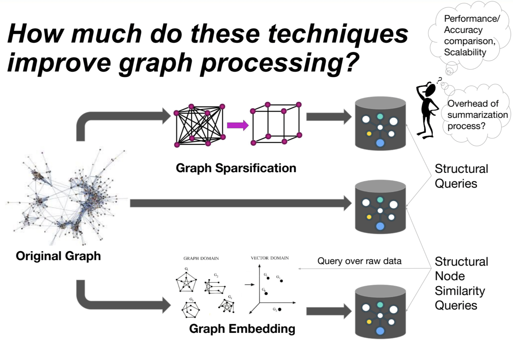

Two-Cloud Private Read Alignment to a Public Reference Genome
The large-scale nature of human genome necessitates outsourcing of genomic computations to public clouds.
However, this raises some serious privacy concerns.
We designed and developed a two-cloud private read alignment algorithm using the Burrows-Wheeler Transform and the FM-Index. Our paper is
accepted to Proceedings of Privacy Enhancing Technologies Symposium 2023.
Graph Sketches and Embeddings: A Study of their Applications on Graph Databases (Master's Thesis)

An important practical consideration while processing large volumes of graph data is creating summaries of the data,
since it is usually impractical to perform operations on the entire dataset. In my thesis, I studied graph sparsification and embedding
techniques and provided a performance study of thier effects on graph properties like page rank, betweenness centrality, community detection
and node similarity.
Evaluation of High-Performance Application-level Caching of Generic Graph Structured Data
I studied different hashing techniques and implemented simple graph
algorithms (adjacency lists, shortest path, and the minimum number of hops) on SNAP datasets, and made a comparison of the effects of the techniques
by running queries neo4j graph database.
Supporting Non-relational Models with Flexible Schema Storage
This project deals with the comparison of performances of NoSQL data stores
with relational data models using get and count operators. I also explored the tile-based architectures and provided a
theoretical discussion on how the mappings from different NoSQL data stores and relational model to tile-based architectures might work.